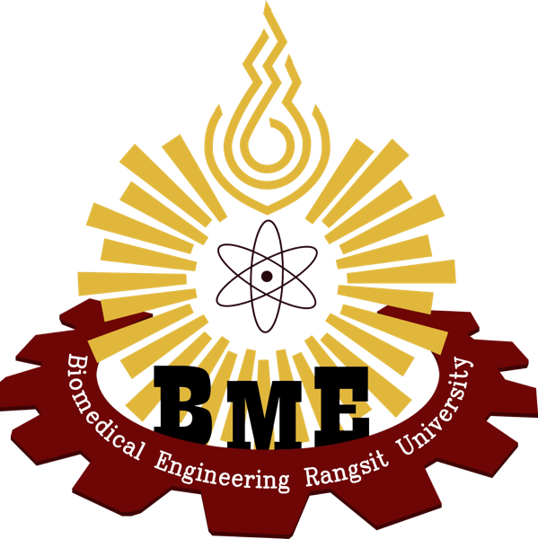

SIP LAB BME RSU
ห้องปฏิบัติการวิจัยและพัฒนาด้านการประมวลผลสัญญาณและภาพทางการแพทย์
วิทยาลัยวิศวกรรมชีวการแพทย์ มหาวิทยาลัยรังสิต

ส่วนหนึ่งของ วิทยาลัยวิศวกรรมชีวการแพทย์ มหาวิทยาลัยรังสิต — มุ่งพัฒนานวัตกรรมและเทคโนโลยีชีวการแพทย์ร่วมกับโรงพยาบาลชั้นนำ
bme.rsu.ac.thขอบเขตการวิจัย
SIP LAB มุ่งเน้นการวิจัยและพัฒนาใน 4 กลุ่มหลัก
Brain Signal Processing
การประมวลผลสัญญาณสมอง EEG และ fNIRS สำหรับงานวิจัย Neuroscience และ BCI
Medical Image Processing
การวิเคราะห์ภาพทางการแพทย์ด้วย Deep Learning สำหรับการวินิจฉัยโรค
Biosensor & Electrochemical
การพัฒนา Biosensor และ Electrochemical Sensor สำหรับตรวจวัดสารชีวภาพ
Biomedical Robotics & Control
การออกแบบและควบคุมหุ่นยนต์และอุปกรณ์ช่วยเหลือทางการแพทย์
อาจารย์ที่ปรึกษา
งานวิจัยล่าสุด
MIP-based electrochemical sensor with machine learning for accurate ZIKV detection
Analytical Biochemistry, 702, 115854
Autism spectrum disorder disrupts brain network connectivity maturation during childhood development
Scientific Reports
Evaluating synthetic neuroimaging data augmentation for automatic brain tumour segmentation
IBRO Neuroscience Reports, 16, 57–66
Evaluation of single and dual image object detection using ResNet18 in robotic vision
Journal of Robotics and Control (JRC), 4(3), 263–277
กิจกรรม Lab
Workshop การประมวลผลสัญญาณ EEG
อบรมเชิงปฏิบัติการสำหรับนักศึกษาและบุคลากรด้านการวิเคราะห์สัญญาณสมอง EEG เบื้องต้นและขั้นสูง
Workshopความร่วมมือกับโรงพยาบาล
โครงการวิจัยร่วมกับโรงพยาบาลชั้นนำในการพัฒนาอุปกรณ์การแพทย์
Researchนำเสนองานใน BMEiCON 2023
นักศึกษา SIP LAB นำเสนอผลงานวิจัยในงานประชุมวิชาการระดับนานาชาติ
Conferenceรับนักศึกษาวิจัยใหม่
เปิดรับสมัครนักศึกษาระดับปริญญาตรีและโทที่สนใจทำวิจัยใน Lab
Recruitmentสนใจร่วมวิจัยกับ SIP LAB?
เปิดรับนักศึกษาระดับปริญญาตรี-โท และนักวิจัยที่สนใจด้านสัญญาณและภาพทางการแพทย์